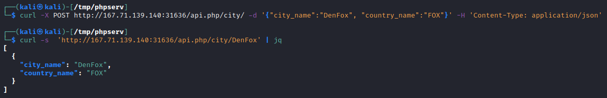
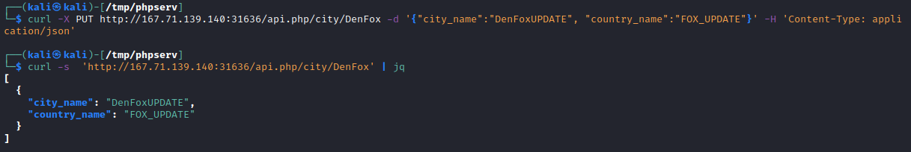

CRUD APIs
The acronym CRUD, stands for Create, Read, Update, Delete.
The meaning of CRUD is that we can build our custom APIs on the four operations of CRUD
Mapping Between CRUD APIs and REST APIsThe four operations of CRUD are mainly linked to the commonly know CRUD APIs, but the same principle is also used in REST APIs and several other types of APIs
| Operation | HTTP Method | Description |
|---|
| Read | GET | Reads the specified entity from the database table |
| Create | POST | Adds the specified data to the database table |
| Update | PUT | Updates the data of the specified database table |
| Delete | DELETE | Removes the specified row from the database table |
Read
Read data with API
curl http://<SERVER_IP>:<PORT>/api.php/OPTIONS
To format the JSON output we can use the
jq utility and
-s option to silent any unneeded cURL output
curl -s http://<SERVER_IP>:<PORT>/api.php/city/london | jq
Create
To add a new entry, we can use an HTTP POST request
curl -X POST http://<SERVER_IP>:<PORT>/api.php/city/ -d '{"city_name":"Fox City", "country_name":"FOX"}' -H 'Content-Type: application/json' this custom API is using JSON data, we will also set the Content-Type header to JSON
Update
PUT and PATCH can be both used to update an entry.
In some APIs, the Update operation may be used to create new entries as well. Basically, we would send our data, and if it does not exist, it would create it.
• PUT is used to updated API entries and modify their details
• PATCH method may also be used to update API entries instead of PUT. To be precise, PATCH is used to partially update an entry (only modify some of its data "e.g. only city_name"), while PUT is used to update the entire entry. We may also use the HTTP OPTIONS method to see which of the two is accepted by the server, and then use the appropriate method accordingly. In this section, we will be focusing on the PUT method, though their usage is quite similar.
Delete
DELETE is used to remove a specific entity
curl -X DELETE http://<SERVER_IP>:<PORT>/api.php/city/DenFox